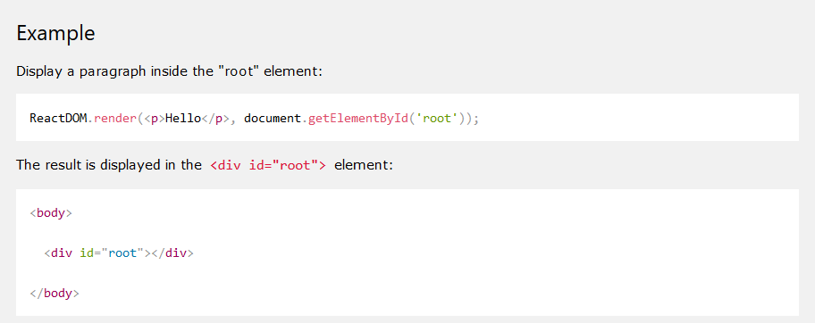
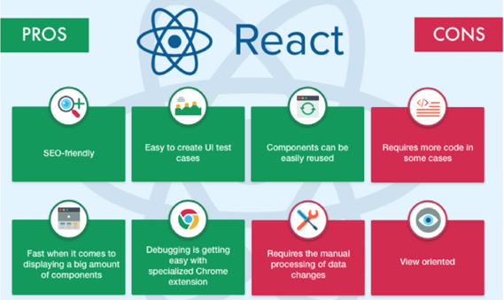

React JS

React JS
- React is a declarative, efficient, and flexible JavaScript library for building user interfaces. It lets you compose complex UIs from small and isolated pieces of code called “components”.
- React was originally as a web app, but later the React Native platform, which was designed for mobile devices, was created.
- React is the perfect tool for developing web applications.
The importance of React studying
- The leading companies such as PayPal, Apple, Netflix, and other thousands of websites are using React library. It highlights the importance of studying React as an essential part of development process.
- To elaborate on why businesses are converging towards this technology, we need to explore React’s primary features that facilitate the creation of high performance, agile applications.
React capabilities
- React creates individual components and makes it easy to transfer them from project to project. A component is a small chunk of code, which repeated across several web pages. It is called reusability, which is a great way to save valuable time on development.
- JSX is an XML/HTML-like syntax used by React that extends ECMAScript so that XML/HTML-like text can co-exist with JavaScript/React code. JSX provides a simple and intuitive way to define visual interface code.
- JSX syntax is intended to be used by preprocessors such as Babel to transform HTML-like text found in JavaScript files into standard JavaScript objects that a JavaScript engine will parse. Babel allows the developer to work with ES6 code.
- React is based on the reactive programming paradigm. This approach suggests that data is presented as a set of statements or formulas. Changing one of the parameters leads to an automatic recalculation of all the dependencies.
React Native and Mobile Apps
A revolutionary thing that came with React was the ability to build mobile iOS and Android apps, without the need to hire new developers. React Native lets the developer to write fully featured, fully native mobile applications in Javascript. This lets developers reuse code from web application in ReactJS to speed up mobile development.
One of the primary capabilities of React is Virtual DOM
- The virtual DOM (short for Document Object Model) is the core reason why React enables the creation of fast, scalable web apps.
- Through React’s memory reconciliation algorithm, the library constructs a representation of the page in a virtual memory, where it performs the necessary updates before rendering the final web-page into the browser.
React Render HTML
- React's goal is in many ways to render HTML in a web page. React renders HTML to the web page by using a function called ReactDOM.render().
- The ReactDOM.render() function takes two arguments, HTML code and an HTML element. The purpose of the function is to display the specified HTML code inside the specified HTML element. 
React JSX
- JSX allows us to write HTML elements in JavaScript and place them in the DOM without any createElement() and/or appendChild() methods.
- It is not required to use JSX, but JSX makes it easier to write React applications.
- JSX is an extension of the JavaScript language based on ES6, and is translated into regular JavaScript at runtime.
- By adding a JSX transformation step it is possible to find errors in HTML that the developer might otherwise miss.
React Installing
- There are two ways to use React: either write the code in the browser, or set up a local development environment on the computer.
- The officially recommended method is to download React from npm or Facebook CDN, in addition you can clone git and build your own React.
- Besides, it is possible to use the starter kit or save time with the application framework generator (like Yeoman)
Project structure

Conclusion
React is a declarative, efficient, and flexible JavaScript library for building user interfaces. React’s most important advances are the emphasis on components, one-way data flow, the Virtual DOM, JSX, and architecture that extends beyond HTML.
